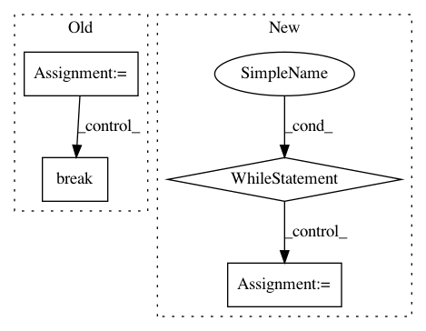

31bfc7c1ce9dac771dbd5e2edf2d5e789d8b1aaa,evaluate.py,,from_pipe,#,18
Before Change
read_input = True
while read_input:
for i in range(0, opts.batch_size):
raw_image = pipe_in.stdout.read(width * height * 3)
if len(raw_image) != nbytes:
read_input = False
break
image = numpy.fromstring(raw_image, dtype="uint8")
image = image.reshape((height, width, 3))
X[i] = image
if read_input:
_preds = sess.run(preds, feed_dict={img_placeholder: X})
for i in range(0, opts.batch_size):
After Change
while read_input:
count = 0
while count < opts.batch_size:
raw_image = pipe_in.stdout.read(width * height * 3)
if len(raw_image) != nbytes:
last = True
X = X[:count]
batch_shape = (count, height, width, 3)
img_placeholder = tf.placeholder(tf.float32, shape=batch_shape,
name="img_placeholder")
preds = transform.net(img_placeholder)
break
image = numpy.fromstring(raw_image, dtype="uint8")
image = image.reshape((height, width, 3))
X[count] = image
count += 1
if read_input:
if last:
read_input = False
_preds = sess.run(preds, feed_dict={img_placeholder: X})
In pattern: SUPERPATTERN
Frequency: 4
Non-data size: 4
Instances
Project Name: lengstrom/fast-style-transfer
Commit Name: 31bfc7c1ce9dac771dbd5e2edf2d5e789d8b1aaa
Time: 2016-12-23
Author: jonathan.e.m.bocker@gmail.com
File Name: evaluate.py
Class Name:
Method Name: from_pipe
Project Name: GoogleCloudPlatform/ml-on-gcp
Commit Name: 06b9fdb0079116af3e79021a4fb27a2caac1ad97
Time: 2018-01-24
Author: yuhanliu@google.com
File Name: sklearn/hpsearch/gke_parallel.py
Class Name: GKEParallel
Method Name: _partition_search_spaces
Project Name: CamDavidsonPilon/lifelines
Commit Name: b649cc365040d9cd63631c763d1c485dfe981399
Time: 2020-05-11
Author: cam.davidson.pilon@gmail.com
File Name: experiments/working_npmle.py
Class Name:
Method Name: create_turnball_intervals
Project Name: dgasmith/opt_einsum
Commit Name: 49d861234d508dc89c477750f9d5aebbee7176e3
Time: 2018-06-19
Author: john.gray.14@ucl.ac.uk
File Name: opt_einsum/parser.py
Class Name:
Method Name: gen_unused_symbols